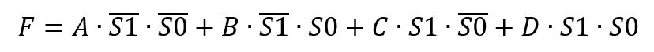

Keywords: tristate gates, pull-up/pull-down, selector
Gate-level modeling is design at a lower level of abstraction using basic logic units, such as AND gates, NAND gates, etc. Compared with behavioral modeling, gate-level modeling focuses more on hardware implementation methods, that is, implementing various logic functions by connecting basic gate circuits. Although behavioral modeling will eventually be synthesized into a basic gate-level circuit network, for complex designs, behavioral modeling is far more efficient than gate-level modeling. Therefore, Verilog is mostly used today to describe the behavioral level (RTL) of digital designs, generally focusing only on the algorithm or flow of design implementation, without special concern for the specific hardware implementation method.
Some designs, such as clock gating, require the use of basic gate units to increase circuit controllability and reliability.
Multi-input gates
Multi-input gates have only a single output, with one or more inputs. The built-in multi-input gates in Verilog are as follows:
and (AND gate), nand (NAND gate), or (OR gate), nor (NOR gate), xor (XOR gate), xnor (XNOR gate)
When using basic logic gate units to implement some simple logic functions, you can use module instantiation.
For gate-level units, the first port is the output, and the following ports are inputs; be careful when instantiating and calling them.
When instantiating gate-level units, you can also omit the instance name, which facilitates code writing.
When there are more than two input ports, just continue to list the input signals in the port list; Verilog will recognize them automatically.
Example
and a1 (OUTX, IN1, IN2) ;
nand na1 (OUTX1, IN1, IN2) ;
or or1 (OUTY, IN1, IN2) ;
nor nor1 (OUTY1, IN1, IN2) ;
//3 input
xor xor1 (OUTZ, IN1, IN2, IN3) ;
//no instantiation name
xnor (OUTZ1, IN1, IN2) ;
The truth table of multi-input gates is as follows. Note that the output will not be X.Z。

Multi-output gates
Multi-output gates have only a single input, with one or more outputs. They are also called buffers, and serve to buffer and delay signals.
The built-in multi-output gates are as follows:
buf(缓冲器) not(非门)
Similar to multi-input gates, multi-output gates can be invoked using module instantiation.
For gate-level units, the first port is the output and the last port is the input. When there is more than one output port, you need to arrange the output signals before the last input port.
When instantiating, you may also omit the instance name.
Example
buf buf1 (OUTX2, IN1) ;
//2 output
buf buf2 (OUTY2, OUTY3, IN2) ;
//no instantiation name
not (OUTZ3, IN3) ;
The truth table of multi-output gates is as follows. Note that the output will not be X.Z。
| buf | 0 | 1 | x | z | not | 0 | 1 | x | z | |
|---|---|---|---|---|---|---|---|---|---|---|
| Output | 0 | 1 | x | x | Output | 1 | 0 | x | x |
Tristate gates
Verilog also provides four buffer gate units with control inputs, called tristate gates. Data can pass normally only when the control signal is active; otherwise, the output is in a high-impedance state.Z。
The names and symbols of the four tristate gates are as follows:

When instantiating, the first port of a tristate gate is the output, the second port is the data input, and the third port is the control input. The signal order must be consistent during instantiation.
Tristate gates do not support more than one output port, but the instance name may be omitted during instantiation.
Example
bufif1 buf1 (OUTX, IN1, CTRL1) ;
bufif0 buf2 (OUTY, IN1, CTRL2) ;
notif1 buf3 (OUTZ, IN1, CTRL3) ;
//no instantiation name
notif0 (OUTX1, IN1, CTRL4) ;
The truth table of tristate gates is as follows.
Some entries in the table are optional. For example, 1/z indicates that, depending on the signal strength at the input and control ports, the output may be 1 or z.z。
| bufif1 | Control terminal | bufif0 | Control terminal | |||||||
|---|---|---|---|---|---|---|---|---|---|---|
| 0 | 1 | x | z | 0 | 1 | x | z | |||
| 0 | z | 0 | 0/z | 0/z | 0 | 0 | z | 0/z | 0/z | |
| 1 | z | 1 | 1/z | 1/z | 1 | 1 | z | 1/z | 1/z | |
| x | z | x | x | x | x | x | z | x | x | |
| z | z | x | x | x | z | x | z | x | x |
| notif1 | Control terminal | notif0 | Control terminal | |||||||
|---|---|---|---|---|---|---|---|---|---|---|
| 0 | 1 | x | z | 0 | 1 | x | z | |||
| 0 | z | 1 | 1/z | 1/z | 0 | 1 | z | 1/z | 1/z | |
| 1 | z | 0 | 0/z | 0/z | 1 | 0 | z | 0/z | 0/z | |
| x | z | x | x | x | x | x | z | x | x | |
| z | z | x | x | x | z | x | z | x | x |
For an example of using tristate gates to implement configurable input/output PAD functions, see Section 1.2 Switch-Level Modeling in this tutorial.
For an example of using tristate gates to implement configurable pull-up/pull-down PAD functions, see Chapter 5.1 Verilog Modules and Ports in the Verilog Tutorial.
Pull-up and pull-down resistors
Pull-up clamps an uncertain signal to a high level through a resistor.
Pull-down connects an uncertain signal to ground through a resistor, fixing it at a low level.
Pull-up or pull-down resistors at module ports have functions such as current limiting, improving drive capability, and ESD protection, which can effectively protect the circuit.
When the signal direction is input and there is no input signal (high-impedance state), the pull-up will set the logic value of the signal to1, and the pull-down will set the logic value of the signal to0。
Verilog provides logic gate units for setting pull-up and pull-down resistors on signals, mostly used for module port signals.
Such gate units have no inputs and only outputs. The keywords are as follows:
pullup(设置上拉) pulldown(设置下拉)
When instantiating and calling them, you only need to specify the signal for which the pull-up/pull-down resistor is to be set.
The instance name may also be omitted.
pullup p1 (IN1); pulldown (OUTX);
Once set here, the pull-up/pull-down resistors cannot be changed afterward. In Chapter 5.1 Verilog Modules and Ports of the Verilog Tutorial, there is an example that uses tristate gate buffers to implement configurable pull-up/pull-down PAD functions. Please feel free to refer to it.
4-to-1 multiplexer
The following compares the implementation of a 4-to-1 selector to illustrate that gate-level modeling is more cumbersome than behavioral modeling.
With inputs A, B, C, D, output F, and select signals SEL1, SEL0, the expression of the 4-to-1 selector is:

Gate-level modeling is as follows:
Example
input A, B, C, D ,
input S0, S1,
output F );
//reversing
wire S0R, S1R ;
not (S0R, S0) ;
not (S1R, S1) ;
//logic and
wire AAND, BAND, CAND, DAND ;
and (AAND, A, S1R, S0R);
and (BAND, B, S1R, S0);
and (CAND, C, S1, S0R);
and (DAND, D, S1, S0);
//logic or
or (F, AAND, BAND, CAND, DAND) ;
endmodule
Behavioral modeling is as follows:
Example
input A, B, C, D ,
input S0, S1,
output F );
assign F = {S1, S0} == 2'b00 ? A :
{S1, S0} == 2'b01 ? B :
{S1, S0} == 2'b10 ? C :
{S1, S0} == 2'b11 ? D : 0 ;
endmodule
Although the synthesis result of behavioral modeling may be the same as gate-level modeling, behavioral modeling is obviously better in readability and simplicity during design.
Click me to share notes
<p style="font-size:14px;">Notes must be an expansion of the content of this article!</p><br> <p style="font-size:12px;"><a href="../tougao.html" target="_blank">Submit an article, click here</a></p> <p style="font-size:14px;"><a href="./runoob-user-test-intro.html" target="_blank">How to get a registration invitation code</a></p> <h3 class="text-muted"><i class="fa fa-info-circle" aria-hidden="true"></i> You must <a href=".." class="runoob-pop">log in</a> before sharing notes!</h3> <p><a href="./runoob-user-test-intro.html" target="_blank">How to get a registration invitation code</a></p>